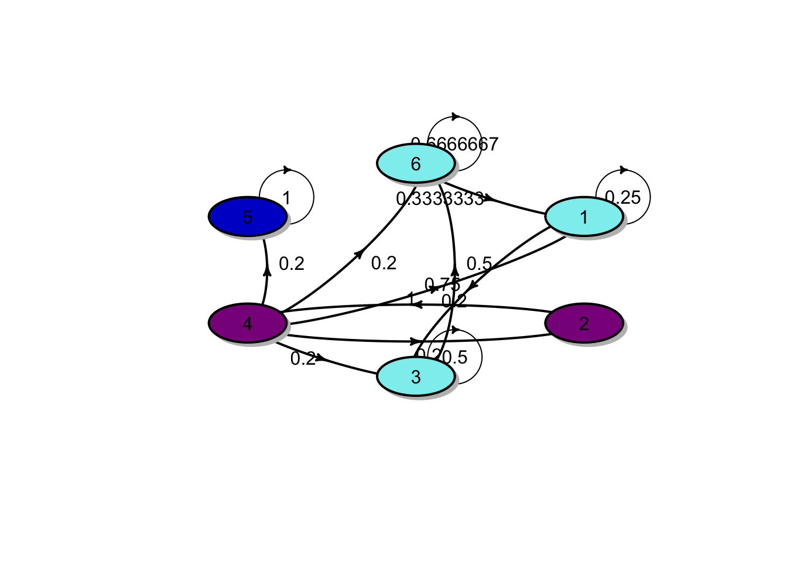
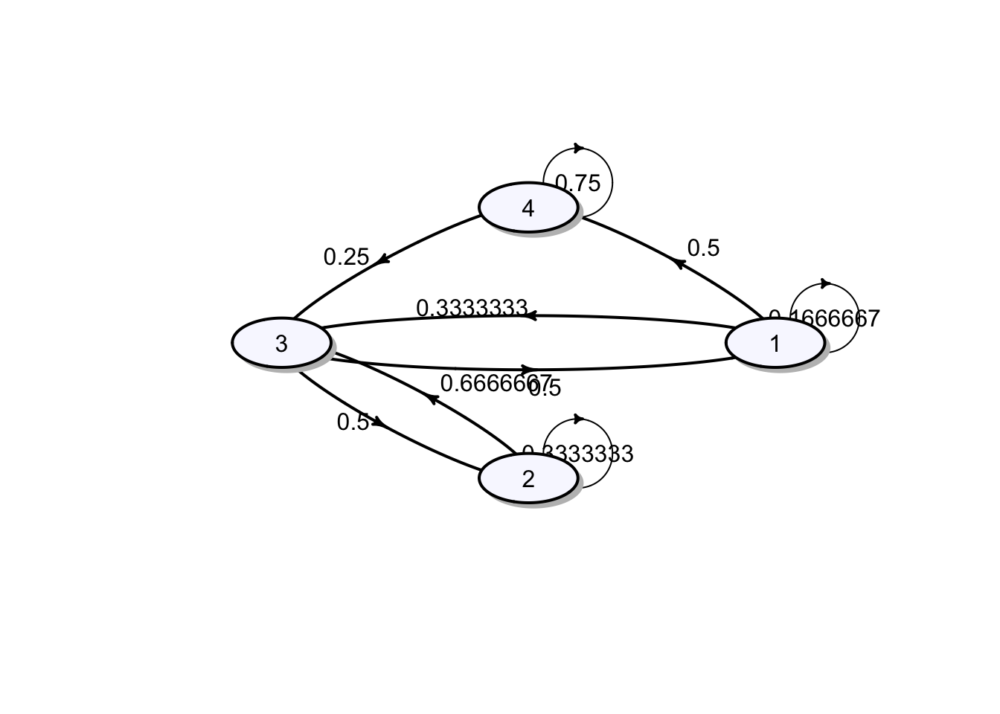

Chapter 5 Tutorials
5.1 Tutorial 1
Consider a random walk, \(S_n\), with \(S_0 = 0\) and where each step is normally distributed with mean 0 and variance 10.
What is the distribution of \(S_{10}\)?
Calculate \(\Pr(S_{10} < -10)\).
Solution:
We have \(S_{10}\) is a sum of \(S_0\) and the i.i.d random variables \(Z_i\), each distributed normal distribution, \(Z_i \sim N(0,10)\). Moreover, \[\mathrm{E}[S_{10}] = \mathrm{E}[S_0 + \sum_{i=1}^{10} Z_i] = S_0 + \sum_{i=1}^{10} \mathrm{E}[Z_i] = 0\] and \[\mathrm{Var}[S_{10}] = \mathrm{Var}[S_0 + \sum_{i=1}^{10} Z_i] = \sum_{i=1}^{10} \mathrm{Var}[Z_i] = 100\] Therefore, the distribution of \(S_{10}\) is normally distributed, \(S_{10} \sim N(0,100)\).
From the previous result, \[\Pr(S_{10} < -10) = \Pr(Z < -1) = 0.1587.\]
Suppose that the value of a commodity as a random walk, where each day the change in price has mean $0.05 and variance $0.1. Use the central limit theorem to estimate the probability that its value is more than $6 after 100 days if the initial value is $0.50.
Solution: We have \(S_{100}\) is a sum of \(S_0\) and the i.i.d random variables \(Z_i\), each distributed normal distribution, \(Z_i \sim N(0.05,0.1)\). Moreover, \[\mathrm{E}[S_{100}] = \mathrm{E}[S_0 + \sum_{i=1}^{100} Z_i] = S_0 + \sum_{i=1}^{100} \mathrm{E}[Z_i] = 5.5\] and \[\mathrm{Var}[S_{100}] = \mathrm{Var}[S_0 + \sum_{i=1}^{100} Z_i] = \sum_{i=1}^{100} \mathrm{Var}[Z_i] = 10\] Therefore, the distribution of \(S_{100}\) is normally distributed, \(S_{100} \sim N(5.5,10)\).
The Central Limit Theorem implies that \(S_{100}\) is approximately normally distributed, \(S_{100} \sim N(5.5,10)\).
\[\Pr(S_{100} > 6) = \Pr(Z > 0.1581) = 1 - \Pr(Z < 0.1581) = 1- 0.5628 = 0.4372.\]
For the random walk process as described in the lecture note,
Calculate \(\Pr(X_8 = 96 | X_0 = 100),\)
Calculate \(\Pr(X_1 = 99, X_8 = 96 | X_0 = 100),\)
Calculate \(\Pr(X_1 = 99, X_4 = 98, X_8 = 96 | X_0 = 100),\)
Calculate \(\Pr( X_4 = 98, X_8 = 96 |X_1 = 99, X_0 = 100),\)
Given \(X_0 = 100\), calculate \(\mathrm{E}[X_5]\).
Write down the joint distribution of \(X_1\) and \(X_3\) given \(X_0 = 100\). (Hint: consider all possible sample paths)
Solution:
Here the price must increase on any 2 day(s) and decrease on any 6 day(s), not necessarily in that order. There are \({ 8 \choose 2} = 28\) different possibilities and each of these has probability \(p^{2}(1-p)^{6}\). Therefore, the required probability is \[\Pr(X_8 = 96 | X_0 = 100) = 28 p^{2}(1-p)^{6} .\]
The problem can be divided into two periods:
The first period of 1 day(s): the price in this period must increase on any 0 day(s) and decrease on any 1 day(s), not necessarily in that order. There are \({ 1 \choose 0}\) different possibilities and each of these has probability \(p^{0}(1-p)^{1}\).
The next period of 7 day(s): the price in this period must increase on any 2 day(s) and decrease on any 5 day(s), not necessarily in that order. There are \({ 7 \choose 2}\) different possibilities and each of these has probability \(p^{2}(1-p)^{5}\).
The required probability is \[\Pr(X_1 = 99, X_8 = 96 | X_0 = 100) = 21 p^{2}(1-p)^{6} .\]
Similar to the previous problem, the required probability can be calculated as follows:
The problem can be divided into three periods:
The first period of 1 day(s): the price in this period must increase on any 0 day(s) and decrease on any 1 day(s), not necessarily in that order. There are \({ 1 \choose 0}\) different possibilities and each of these has probability \(p^{0}(1-p)^{1}\).
The next period of 3 day(s): the price in this period must increase on any 1 day(s) and decrease on any 2 day(s), not necessarily in that order. There are \({ 3 \choose 1}\) different possibilities and each of these has probability \(p^{1}(1-p)^{2}\).
The last period of 4 day(s): the price in this period must increase on any 1 day(s) and decrease on any 3 day(s), not necessarily in that order. There are \({ 4 \choose 1}\) different possibilities and each of these has probability \(p^{1}(1-p)^{3}\).
The required probability is \[\Pr(X_1 = 99, X_4 = 98, X_8 = 96 | X_0 = 100) = 12 p^{2}(1-p)^{6} .\]
By Markov property, we have \[\Pr( X_4 = 98, X_8 = 96 |X_1 = 99, X_0 = 100), = \Pr( X_4 = 98, X_8 = 96 |X_1 = 99).\] Again, the problem can be divided into two periods:
The first period of 3 day(s): the price in this period must increase on any 1 day(s) and decrease on any 2 day(s), not necessarily in that order. There are \({ 3 \choose 1}\) different possibilities and each of these has probability \(p^{1}(1-p)^{2}\).
The next period of 4 day(s): the price in this period must increase on any 1 day(s) and decrease on any 3 day(s), not necessarily in that order. There are \({ 4 \choose 1}\) different possibilities and each of these has probability \(p^{1}(1-p)^{3}\).
The required probability is \[\Pr( X_4 = 98, X_8 = 96 |X_1 = 99, X_0 = 100) = \Pr( X_4 = 98, X_8 = 96 |X_1 = 99) = 12 p^{2}(1-p)^{5} .\]
The variable \(X_5\) can take the values from \(95, 97, 99, 101, 103, 105\). In particular, \[\begin{aligned} \Pr(X_5 &= 95) = {5 \choose 0} p^0 (1-p)^5 = 1 p^0 (1-p)^5 \\ \Pr(X_5 &= 97) = {5 \choose 1} p^1 (1-p)^4 = 5 p^1 (1-p)^4\\ \Pr(X_5 &= 99) = {5 \choose 2} p^2 (1-p)^3 = 10 p^2 (1-p)^3\\ &\vdots \\ \Pr(X_5 &= 105) = {5 \choose 5} p^5 (1-p)^0 = 1 p^5 (1-p)^0 \end{aligned}\]
Therefore, \(\mathrm{E}[X_5] = 95 \cdot \left( 1 p^0 (1-p)^5 \right) + 97 \cdot \left(5 p^1 (1-p)^4 \right) + 99 \cdot \left(10 p^2 (1-p)^3 \right) + \cdots + 105 \cdot \left( 1 p^5 (1-p)^0 \right) = 95 + 10*x.\) Alternatively, \[\begin{aligned} E\left[X_{5}\right] &=E\left[100+\sum_{i=1}^{5} Z_{i}\right] \\ &= 100+5 \cdot E\left[Z_{i}\right] \\ &=100+ 5 (2 p-1) \\ &=95 + 10p\end{aligned}\] where \(E\left[Z_{i}\right] = p-q = p - (1 - p) = 2p -1.\)
For each event,
Identify a stochastic process \(\{ X_t : t \in T\}\) and describe \(X_t\) in context.
Describe the time domain and state space. State whether the time domain and state space are discrete or continuous.
Sociologists categorise the population of a country into upper-, middle- and lower-class groups. One of the government offices has monitored the movement of successive generations among these three groups.
The insurer’s surplus (an excess of income or assets over expenditure or liabilities in a given period) at any future time which is defined as the initial surplus plus the premium income up to time \(t\) minus the aggregate claims up to time \(t\).
In a working day, a coffee shop owner records customer arrival times.
The gambler starts with m and bets per game. The probability of winning is \(p\) and the probability of losing is \(q\) where \(p + q = 1\). In addition, the gambler is ruined (or goes broke) if he reaches state 0, and also stops the game if he reaches state \(N\).
In the board game Monopoly, there are 40 squares. A player is interested to know the successive board position.
Solution:
Let \(X_{n}\) be the class of \(n^{\text {th }}\) generation of a family. The state space, \(S=\{\text {Upper, Middle, Lower} \}\), is discrete. The index set, \(I=\{0,1,2, \ldots\}\), is also discrete.
Let \(S(t)\) be the insurer’s surplus at time \(t\). \(S=\mathbb{R} \text { and } I=[0, \infty)\).
Let \(X_{n}\) be the amount of money of the gambler after game \(n\).
\(S=\{0,1,2 \ldots, N\} \text { and } I=\{0,1,2 ,\ldots \}\).
Suppose that the opening hours of the coffee shop are from 7:00 am to 6:00 pm (i.e. 11 hours). Let \(X_{n}\) be the arrival time of customer \(n\). State space (continuous)
\(S=[0,11 \times 60]=[0,660]\) (in minutes) and \(I=\{1,2, \ldots\}\).
Let \(x_{n}\) be a player’s board position after \(n\) plays.
\(S=\{1,2,3, \ldots, 40\}\) and \(I=\{0,1,2, \ldots \}.\)
The simple weather pattern can be classified into three types including rainy (\(R\)), cloudy (\(C\)) and sunny (\(S\)). The weather is observed daily. The following information is provided.
On any given rainy day, the probability that it will rain the next day is 0.7; the probability that it will be cloudy the next day 0.2.
On any given cloudy day, the probability that it will rain the next day is 0.75; the probability that it will be sunny the next day 0.1.
On any given sunny day, the probability that it will rain the next day is 0.2; the probability that it will be sunny the next day 0.4.
Explain how this may be modelled by a Markov chain.
Solution: The three weather conditions describe the three state of the Markov chain. Let \(X_{n}\)be the weather condition on day \(n\).
State 1 (R) rainy day
State 2 (C) cloudy day
State 3 (S) sunny day
The transition probability matrix \(P\) for this Markov chain is
\[P=\left[\begin{array}{lll} 0.7 & 0.2 & 0.1 \\ 0.75 & 0.15 & 0.1 \\ 0.2 & 0.4 & 0.4 \end{array}\right]\]
This stochastic process has the Morkov property because the weather condition on the next day depends only on the condition today.
Explain whether an independent and identically distributed sequence of random variables has a Markov property.
Solution: Assume that this Markov chain \(X_0, X_1, X_2 \ldots,\) takes values in \(\{1,2, \ldots, k\} \text { with }\)
\[P\left(X_{n}=j\right) = p_{j} \quad \text { for } j=1,2, \ldots, k \quad \text { and } n \geq 0 .\] Note that this equality holds for all \(n\) because \(\left\{X_{n} \right\}_{n \ge 0}\) have the same distribution.
By independence,
\[P\left(x_{n}=j \mid x_{n-1}=i\right)=P\left(x_{n}=j\right)=p_{j},\]
This proves our claim that the i.i.d. sequence of random variables has a Markov property. Note also that the transition matrix is \[P = \begin{bmatrix} p_1 & p_2 & \cdots & p_k \\ p_1 & p_2 & \cdots & p_k \\ \vdots & \vdots & & \vdots \\ p_1 & p_2 & \cdots & p_k \\ \end{bmatrix}.\]
The random variables \(Z_1, Z_2, \ldots\) are independent and with the common probability mass function \[Z_i = \begin{cases} 1, & \text{ with probability } 0.2 \\ 2, & \text{ with probability } 0.3 \\ 3, & \text{ with probability } 0.4 \\ 4, & \text{ with probability } 0.1 \\ \end{cases}\] Let \(X_0 = 1\) and \(X_n = \max\{Z_1, Z_2, \ldots, Z_n \}\) be the largest \(Z\) observed to date. Explain how this may be modelled by a Markov chain. Solution:
Given \(X_{0}=1\) and \(X_{n}=\max \left\{Z_{1}, Z_{2}, \ldots, Z_{n}\right\}\) where \(\left\{Z_{i}\right\}\) are i.i.d. random variables with
\(i\) 1 2 3 4 \(P(Z_i = i)\) 0.2 0.3 0.4 0.1 We note that \[\begin{aligned} X_{n+1} &=\operatorname{max}\left\{Z_{1}, Z_{2}, \ldots, Z_{n+1}\right\} \\ &=\operatorname{max}\left\{X_{n}, Z_{n+1}\right\} \end{aligned}\] Consider the transition probabilities
\[\begin{aligned} P\left(X_{n+1} = j \mid X_{n}=i \right) &= P\left(\max \left\{X_{n}, Z_{n+1}\right\}=j \mid X_{n}=i\right) \\ &=P\left(\max \left\{i, Z_{n+1}\right\}=j \mid X_{n}=i\right) \end{aligned}\]
Case 1: If \(i=1\), then \[\max \left\{1, Z_{n+1}\right\}= \begin{cases} 1 & \text{w.p. } 0.2 \\ 2 & \text{w.p. } 0.3 \\ 3 & \text{w.p. } 0.4 \\ 4 & \text{w.p. } 0.1 \\ \end{cases}\]
Case 2: If \(i=2\), then \[\max \left\{2, Z_{n+1}\right\}= \begin{cases} 1 & \text{w.p. } 0 \\ 2 & \text{w.p. } 0.5 \quad (\text{i.e. } z_{n+1} = 1 \text{ or } 2 )\\ 3 & \text{w.p. } 0.4 \\ 4 & \text{w.p. } 0.1 \\ \end{cases}\]
Case 3: If \(i=3\), then \[\max \left\{3, Z_{n+1}\right\}= \begin{cases} 1 & \text{w.p. } 0 \\ 2 & \text{w.p. } 0 \\ 3 & \text{w.p. } 0.9 \\ 4 & \text{w.p. } 0.1 \\ \end{cases}\]
Case 4: If \(i=4\), then \[\max \left\{4, Z_{n+1}\right\}= \begin{cases} 1 & \text{w.p. } 0 \\ 2 & \text{w.p. } 0 \\ 3 & \text{w.p. } 0 \\ 4 & \text{w.p. } 1 \\ \end{cases}\] The transition probability matrix is then
\[P = \begin{bmatrix} 0.2 & 0.3 & 0.4 & 0.1 \\ 0 & 0.5 & 0.4 & 0.1 \\ 0 & 0 & 0.9 & 0.1 \\ 0 & 0 & 0 & 0.1 \\ \end{bmatrix}.\] Clearly the sequence \(X_0, X_1, X_2,\ldots\) can be modelled by the Markov chain with the transition probability matrix \(P\). Moreover, given the most recent value \(X_n\), its future value \(X_{n+1}\) is independent of the past history \(X_0, X_1, \ldots, X_{n-1}\).
5.2 Tutorial 2
A Markov chain \(X_0, X_1, \ldots\) on states \(1, 2, 3\) has the following transition matrix \[P = \begin{bmatrix} 0.5 & 0.3 & 0.2 \\ 0.2 & 0.2 & 0.6 \\ 0.3 & 0.2 & 0.5 \\ \end{bmatrix}.\] The distribution of the initial random variable \(X_0\) is \(\boldsymbol{\mu} = (0.3, 0.3, 0.4)\).
Draw a transition diagram for the chain.
Determine \(\Pr(X_0 = 1, X_1 = 2, X_2 = 3).\)
Determine \(\Pr(X_1 = 2, X_2 = 3 | X_0 = 1).\)
Determine \(\Pr(X_{11} = 2, X_{12} = 3 | X_{10} = 1).\)
Determine \(\Pr(X_2 = 3 | X_0 = 1).\)
Determine \(\Pr(X_3 = 3 | X_1 = 1).\)
Determine \(\Pr(X_2 = 3).\)
Determine \(\mathrm{E}[X_2]\)
Solutions:
The transition diagram for the chain is shown in the figure below:

\(\Pr(X_0 = 1, X_1 = 2, X_2 = 3) = \mu_1 p_{12} p_{23} = (0.3)(0.3)(0.6) = 0.054.\)
\(\Pr(X_1 = 2, X_2 = 3 | X_0 = 1) = p_{12} p_{23} = (0.3)(0.6) = 0.18.\)
From the time homogeneous assumption, it follows that \[\Pr(X_{11} = 2, X_{12} = 3 | X_{10} = 1) = \Pr(X_1 = 2, X_2 = 3 | X_0 = 1) = 0.18.\]
\(\Pr(X_2 = 3 | X_0 = 1) = (P^2)_{13} = 0.38.\)
\(\Pr(X_3 = 3 | X_1 = 1) = \Pr(X_2 = 3 | X_0 = 1) = (P^2)_{13} = 0.38.\)
\(\Pr(X_2 = 3) = (\boldsymbol{\mu}P^2)_3 = 0.424.\)
\(\mathrm{E}[X_2] = \sum_{k=1}^3 k \Pr(X_2 = k) = (1, 2, 3) \cdot (0.343, 0.233, 0.424) = 2.081.\)
Note that
## P^2
## A 3 - dimensional discrete Markov Chain defined by the following states:
## 1, 2, 3
## The transition matrix (by rows) is defined as follows:
## 1 2 3
## 1 0.37 0.25 0.38
## 2 0.32 0.22 0.46
## 3 0.34 0.23 0.43A Markov chain \(X_0, X_1, \ldots\) on states 1,2,3 has the following transition matrix \[P = \begin{bmatrix} 0 & 1/2 & 1/2 \\ 1/3 & 1/3 & 1/3 \\ 1/2 & 1/2 & 0 \\ %\vdots & \vdots & \vdots & \vdots \\ %p_{d1} & p_{d2} & p_{d3} & \dots & p_{dn} \end{bmatrix}.\] The process starts in states \(X_0 = 1\).
Draw a transition diagram for the chain.
Determine \(\Pr(X_0 = 1, X_1 = 3, X_2 = 2).\)
Determine \(\Pr(X_1 = 3, X_2 = 2 | X_0 = 1).\)
Determine \(\Pr(X_2 = 2 | X_0 = 1).\)
Determine \(\Pr(X_3 = 2 | X_1 = 1).\)
Determine \(\Pr(X_2 = 2).\)
Solution:
The transition diagram for the chain is shown in the figure below:

\(\Pr(X_0 = 1, X_1 = 3, X_2 = 2) = \mu_1 p_{13} p_{32} = (1)(1/2)(1/2) = 1/4.\)
\(\Pr(X_1 = 3, X_2 = 2 | X_0 = 1) = p_{13} p_{32} = (1/2)(1/2) = 1/4.\)
\(\Pr(X_2 = 2 | X_0 = 1) = (P^2)_{12} = 5/12.\)
\(\Pr(X_3 = 2 | X_1 = 1) = \Pr(X_2 = 2 | X_0 = 1) = (P^2)_{12} = 5/12.\)
\(\Pr(X_2 = 2) = (\boldsymbol{\mu}P^2)_2 = 5/12.\)
Note that
## P^2
## A 3 - dimensional discrete Markov Chain defined by the following states:
## 1, 2, 3
## The transition matrix (by rows) is defined as follows:
## 1 2 3
## 1 0.4166667 0.4166667 0.1666667
## 2 0.2777778 0.4444444 0.2777778
## 3 0.1666667 0.4166667 0.4166667A Markov chain \(X_0, X_1, \ldots\) on sates 1,2 has the following transition matrix \[P = \begin{bmatrix} 1-a & a \\ b & 1-b \\ %\vdots & \vdots & \vdots & \vdots \\ %p_{d1} & p_{d2} & p_{d3} & \dots & p_{dn} \end{bmatrix},\] where \(0 < a,b < 1.\)
Draw a transition diagram for the chain.
the distribution of \(X_1\).
Show that \[P^n = \frac{1}{a+b} \begin{bmatrix} b & a \\ b & a \\ %\vdots & \vdots & \vdots & \vdots \\ %p_{d1} & p_{d2} & p_{d3} & \dots & p_{dn} \end{bmatrix} + \frac{(1-a-b)^n}{a+b} \begin{bmatrix} a & -a \\ -b & b \\ \end{bmatrix}.\]
Given that \(X_0 = 1\), what is the probability that in the long run the system will be in state 1? (Hint: consider \(\lim_{n \rightarrow \infty} \boldsymbol{\mu} P^n\))
Given that \(X_0 = 1\), what is the probability that in the long run the system will be in state 2?
Given that \(X_0 = 2\), what is the probability that in the long run the system will be in state 1?
Given that \(X_0 = 2\), what is the probability that in the long run the system will be in state 2?
Solution:
Leave it to the reader.
Denote \(\boldsymbol{\mu} = (\mu_1, \mu_2)\) the initial probability distribution. Then the distribution of \(X_1\) is \(\boldsymbol{\mu}^{(1)} = \boldsymbol{\mu} P = (\mu_1(1-a) + \mu_2 b, \mu_1 a + \mu_2(1-b))\)
We apply eigendecomposition of a matrix. For more details, please follow this link from Wikipedia link.
The eigenvalues of \(P\) are \(\lambda_1 = 1\) and \(\lambda_2 = 1 - a -b\) and the corresponding eigenvectors are
\[v_1 = \begin{bmatrix}
1 \\
1 \\
\end{bmatrix}, \quad
v_2 = \begin{bmatrix}
-a/b \\
1 \\
\end{bmatrix}.
\]
Then the transition matrix can be factorised as
\[P = \begin{bmatrix}
1 & -a/b \\
1 & 1 \\
\end{bmatrix}
\begin{bmatrix}
1 & 0 \\
0 & 1 - a - b \\
\end{bmatrix}
\begin{bmatrix}
1 & -a/b \\
1 & 1 \\
\end{bmatrix}^{-1}.
\]
Hence \[\begin{aligned}
P^n &= \left( \begin{bmatrix}
1 & -a/b \\
1 & 1 \\
\end{bmatrix}
\begin{bmatrix}
1 & 0 \\
0 & (1 - a - b)^n \\
\end{bmatrix} \right)
\begin{bmatrix}
1 & -a/b \\
1 & 1 \\
\end{bmatrix}^{-1} \\
&= \begin{bmatrix}
1 & -\frac{a}{b}(1 - a - b)^n \\
1 & (1 - a - b)^n \\
\end{bmatrix}
\left(
\frac{1}{1 + a/b}
\begin{bmatrix}
1 & a/b \\
-1 & 1 \\
\end{bmatrix}
\right) \\
&= \frac{1}{a+b}
\begin{bmatrix}
b + a(1 - a - b)^n & a - a(1 - a - b)^n \\
b - b(1 - a - b)^n & a + b(1 - a - b)^n
\end{bmatrix} \\
&= \frac{1}{a+b}
\begin{bmatrix}
b & a \\
b & a
\end{bmatrix} +
\frac{(1 - a - b)^n}{a+b}
\begin{bmatrix}
a & -a \\
-b & b
\end{bmatrix}
\end{aligned}.
\]
Note that \[\lim_{n \rightarrow \infty} P^n =
\frac{1}{a+b}
\begin{bmatrix}
b & a \\
b & a
\end{bmatrix}, \]
which follows from the facts that \(-1 < 1 -a -b < 1\) and \((1- a-b)^n \rightarrow 0\) as \(n \rightarrow \infty\).
It follows from the above results that in the long run \[ \lim_{n \rightarrow \infty} \Pr(X_n = 1| X_0 = 1) = (\lim_{n \rightarrow \infty} P^n)_{11} = \frac{b}{a+b}. \]
In the long run, we have \[ \lim_{n \rightarrow \infty} \Pr(X_n = 2| X_0 = 1) = (\lim_{n \rightarrow \infty} P^n)_{12} = \frac{a}{a+b}. \]
In the long run, we have \[ \lim_{n \rightarrow \infty} \Pr(X_n = 1| X_0 = 2) = (\lim_{n \rightarrow \infty} P^n)_{21} = \frac{b}{a+b}. \]
In the long run, we have \[ \lim_{n \rightarrow \infty} \Pr(X_n = 2| X_0 = 2) = (\lim_{n \rightarrow \infty} P^n)_{22} = \frac{a}{a+b}. \]
Furthermore, for any initial distribution \(\boldsymbol{\mu}\), the limiting distribution with this initial distribution is \[ \lim_{n \rightarrow \infty} \boldsymbol{\mu} P^n = (\frac{b}{a+b}, \frac{a}{a+b}).\] This gives the long term proportion of the Markov chain, i.e. the probability of finding the process in state 1 is \(\frac{b}{a+b}\) and in state 2 is \(\frac{a}{a+b}\), irrespective of the stating state.
Let \(a\) be a constant and \(\xi_1, \xi_2, \ldots\) be a sequence of independent and identically distributed (i.i.d.) random variables. The stochastic process \(\{ X_n\}\) is defined by \[X_0 = a, \quad X_n = X_{n-1} + \xi_n, \, n > 1.\] This process is known as a random walk.
Express the state \(X_n\) in terms of \(X_0\) and the random variables \(\xi_i, i = 1,2 \ldots\).
Find \(\mathrm{E}[X_n]\) and \(\mathrm{Var}[X_n]\).
Does the process have the Markov property? Explain.
Is the process stationary? Explain.
Solution:
From the definition, it follows that \[ \begin{aligned} X_0 &= a \\ X_1 &= X_0 + \xi_1 = a + \xi_1 \\ X_2 &= X_1 + \xi_2 = a + \xi_1 + \xi_2 \\ &\vdots \\ X_n &= X_{n-1} + \xi_n = a + \sum_{i=1}^n \xi_i, \quad n \ge 1. \end{aligned} \]
Let \(\mu = \mathrm{E}[\xi_i]\) and \(\sigma^2 = \mathrm{Var}[\xi_i]\) denote the mean and variance of the increments \(\xi_i\). Then \[ \begin{aligned} \mathrm{E}[X_n] &= \mathrm{E}\left[a + \sum_{i=1}^n \xi_i\right] = a+ \sum_{i=1}^n \mathrm{E}[\xi_i] = a + n \mu, \\ \mathrm{Var}[X_n] &= \mathrm{Var}\left[a + \sum_{i=1}^n \xi_i\right] = \sum_{i=1}^n \mathrm{Var}[\xi_i] = n \sigma^2. \end{aligned} \] The last equality follows from the assumption that \(\xi_1, \xi_2, \ldots\) are independent.
The process \(\{X_n\}_{n\ge0}\) has independent increments and , hence, has the Markov property. More details can be found from the lecture note link.
The process is not stationary because \(\mathrm{E}[X_n]\) is not constant and \(\mathrm{Var}[X_n]\) also depends on \(n\).
Consider a homogeneous discrete-time Markov chain that describes the daily weather pattern. The weather patterns are classified into 3 conditions: R(rainy), C (cloudy) and S(sunny). Based on the daily observations, the following information are given:
On any rainy day, the probability that it will rain the next day is 0.7; the probability that tomorrow will be cloudy is 0.2 and the probability that tomorrow will be sunny is 0.1.
On any cloudy day, the probability that it will rain the next day is 0.5; the probability that tomorrow will be cloudy is 0.35 and the probability that tomorrow will be sunny is 0.15.
On any sunny day, the probability that it will rain the next day is 0.1; the probability that tomorrow will be cloudy is 0.4 and the probability that tomorrow will be sunny is 0.5.
Draw a transition diagram for the chain and write down a transition matrix.
Find the probability that tomorrow is cloudy and the day after is rainy, given that it is sunny today.
Given that today is rainy, find the probability that it will be sunny in two days time.
Solution:
- The transition matrix \(P\) and the transition diagram are given in the results below :
## P
## A 3 - dimensional discrete Markov Chain defined by the following states:
## R, C, S
## The transition matrix (by rows) is defined as follows:
## R C S
## R 0.7 0.20 0.10
## C 0.5 0.35 0.15
## S 0.1 0.40 0.50The probability that tomorrow is cloudy and the day after is rainy, given that it is sunny today is \[ \Pr(X_1 = C, X_2 = R | X_0 = S) = (0.4)(0.5) = 0.2.\]
Given that today is rainy, the probability that it will be sunny in two days time is \[ \Pr(X_2 = S | X_0 = R) = (P^2)_{13} = 0.15.\]
5.3 Tutorial 3
A Markov chain \(X_0, X_1, \ldots\) on states 1, 2, 3 with initial distribution \(\boldsymbol{\mu} = (1/4,1/4,1/2)\). It has the following transition matrix \[P = \begin{bmatrix} 1/2 & 1/4 & 1/4 \\ 1/3 & 1/3 & 1/3 \\ 1/5 & 2/5 & 2/5 \\ %\vdots & \vdots & \vdots & \vdots \\ %p_{d1} & p_{d2} & p_{d3} & \dots & p_{dn} \end{bmatrix}.\] Compute the following probabilities:
\(\Pr(X_{11} = 1, X_{12} = 2, X_{13} = 3 | X_{10} = 1).\)
\(\Pr(X_0 = 3, X_1 = 2 , X_2 = 1).\)
\(\Pr(X_1 = 3, X_2 = 2 , X_3 = 1).\)
\(\Pr(X_{1} = 2, X_{3} = 2, X_{5} = 2).\)
Solution:
1. We have \(\Pr(X_{11} = 1, X_{12} = 2, X_{13} = 3 | X_{10} = 1) = p_{11} p_{12} p_{23} = (1/2)(1/4)(1/3) = 1/24.\)
2. We have \(\Pr(X_0 = 3, X_1 = 2, X_2 = 1) = \mu_3 p_{32} p_{21} = (0.5)(2/5)(1/3) = 1/15.\)
3. We have \[\begin{aligned} \Pr(X_1 = 3, X_2 = 2, X_3 = 1) &= \sum_{i=1}^{3} \Pr(X_0 = i) \Pr(X_1 = 3, X_2 = 2, X_3 = 1 | X_0 = i) \\ &= \sum_{i=1}^{3} \mu_i p_{i3} p_{32} p_{21} \\ &= \left( \sum_{i=1}^{3} \mu_i p_{i3} \right) p_{32} p_{21} \\ &= (\boldsymbol{\mu}P)_3 p_{32} p_{21}\\ &= (83/240)(2/5)(1/3) \\ &= 83/1800 = 0.0461111. \end{aligned}\]
4. We have \[\begin{aligned} \Pr(X_1 = 2, X_3 = 2, X_5 = 2) &= \sum_{i=1}^{3} \Pr(X_0 = i) \Pr(X_1 = 2, X_3 = 2, X_5 = 2 | X_0 = i) \\ &= \sum_{i=1}^{3} \mu_i p_{i2} p^{(2)}_{22} p^{(2)}_{22} \\ &= \left( \sum_{i=1}^{3} \mu_i p_{i2} \right) p^{(2)}_{22} p^{(2)}_{22} \\ &= (\boldsymbol{\mu}P)_2 p^{(2)}_{22} p^{(2)}_{22}\\ &= (83/240)(59/180)(59/180) \\ &= 9356/251805 = 0.0371557. \end{aligned}\]
A Markov chain with state space \(S = \{1,2,3,4,5,6\}\) has the following transition matrix: \[P = \begin{bmatrix} 1/4 & 0 & 3/4 & 0 & 0 & 0 \\ 0 & 0 & 0 & 1 & 0 & 0 \\ 0 & 0 & 1/2 & 0 & 0 & 1/2 \\ 1/5 & 1/5 & 1/5 & 0 & 1/5 & 1/5 \\ 0 & 0 & 0 & 0 & 1 & 0 \\ 1/3 & 0 & 0 & 0 & 0 & 2/3 \\ \end{bmatrix}.\]
Draw a transition diagram.
Identify the communication classes and classify them as closed or non-closed.
Is the Markov chain irreducible?
Solution:
1. The transition diagram is shown in the figure below:
2. There are two closed classes \(C^1 = \{1, 3, 6\}\) and \(C^2 = \{5\}\) because
\(p_{55} = 1\) and
\(1 \rightarrow 3 \rightarrow 6 \rightarrow 1\), and hence \(1, 3, 6\) are in the same communication class. In addition, for each \(i \in C^1\), \(\sum_{j \in C^1} p_{ij} = 1\), which implies that escaping from \(C^1\) is impossible. Therefore \(C^1\) is a closed class.
There is one non-closed class \(O = \{2, 4\}\). This is because \(2 \leftrightarrow 4\) and \(p_{43} >0\).
- The Markov chain is reducible because it contains more than one communication classes.
For each of the Markov chains whose transition matrix is given below, identify the closed classes and the vector of absorption probabilities associated with each of these closed classes. Assume that the states are labelled \(1,2,3 \ldots\).
\[\begin{bmatrix} 1/6 & 0 & 1/3 & 1/2 \\ 0 & 1/3 & 2/3 & 0 \\ 1/2 & 1/2 & 0 & 0 \\ 0 & 0 & 1/4 & 3/4 \\ \end{bmatrix}.\]
\[\begin{bmatrix} 0 & 1/4 & 3/4 & 0 \\ 0 & 1/3 & 0 & 2/3 \\ 1/3 & 0 & 1/3 & 1/3 \\ 0 & 0 & 0 & 1 \\ \end{bmatrix}.\]
\[\begin{bmatrix} 1/4 & 1/4 & 1/4 & 1/4 \\ 0 & 3/4 & 1/4 & 0 \\ 0 & 3/4 & 1/4 & 0 \\ 0 & 0 & 0 & 1 \\ \end{bmatrix}.\]
\[\begin{bmatrix} 0 & 0 & 0 & 1/2 & 0 & 0 & 1/2 \\ 1/6 & 0 & 1/6 & 0 & 0 & 1/6 & 1/2 \\ 0 & 0 & 1 & 0 & 0 & 0 & 0 \\ 1/2 & 0 & 0 & 1/2 & 0 & 0 & 0 \\ 1/4 & 1/4 & 0 & 0 & 0 & 0 & 1/2 \\ 0 & 1 & 0 & 0 & 0 & 0 & 0 \\ 1/2 & 0 & 0 & 0 & 0 & 0 & 1/2 \\ \end{bmatrix}.\]
Solution:
1. Every two states communicate, so \(\{1, 2, 3, 4 \}\) is a single closed class (since \(1 \rightarrow 4 \rightarrow 3 \rightarrow 2 \rightarrow 3 \rightarrow 1\)). The absorption probabilities are 1, since each state is in this closed class. The transition diagram is shown in the figure below:

2. There are two non-closed classes \(O^1 = \{1, 3\}\) and \(O^2 = \{2\}\) and a closed class \(C^1 = \{4\}\). Since we have a single closed class, all absorption probabilities to this closed class \(C^1 = \{4\}\) are equal to 1. The transition diagram is shown in the figure below:

3. There are two closed classes \(C^1 = \{2, 3\}\) and \(C^2 = \{4\}\) and a non-closed class \(O^1 = \{1\}\). The transition diagram is shown in the figure below:

Let \(\mathbf{u}=\mathbf{u}^{C_{2}}\) be the vector of absorption probabilities in the closed class \(C^2 = \{4\}\). Write \(\mathbf{u}= (u_1,u_2,u_3,u_4)^T\) and \(u_4 = 1\) and \(u_2 = u_3 =0\),
From \(\mathbf{u}=P \cdot \mathbf{u}\),
\[\left(\begin{array}{c}u_{1} \\ u_{2} \\ u_{3} \\ u_{4}\end{array}\right)=\begin{bmatrix} 1/4 & 1/4 & 1/4 & 1/4 \\ 0 & 3/4 & 1/4 & 0 \\ 0 & 3/4 & 1/4 & 0 \\ 0 & 0 & 0 & 1 \\ \end{bmatrix} \left(\begin{array}{c}u_{1} \\ u_{2} \\ u_{3} \\ u_{4}\end{array}\right) \text { gives}\] \[ u_1 = \frac{1}{4} u_1 + \frac{1}{4}\] Solving the linear system for \(u_1\) yields \(u_1 = 1/3\). Hence, the absorption probabilities in the closed class \(C_2\) is \[\mathbf{u}= (1/3,0,0,1)^T.\] In addition, since there are two closed classes, \(\mathbf{u}^{C_1} = \mathbf{1} - \mathbf{u}^{C_2} = (2/3,1,1,0)^T.\)
4. There are two closed classes \(C^1 = \{1, 4, 7\}\) and \(C^2 = \{3\}\) and two non-closed classes \(O^1 = \{2, 6\}\) and \(O^2 = \{5\}\). The transition diagram is shown in the figure below:

Let \(\mathbf{u}=\mathbf{u}^{C_{2}}\) be the vector of absorption probabilities in the closed class \(C^2 = \{3\}\). Write \(\mathbf{u}= (u_1,u_2,u_3,\ldots, u_7)^T\) and \(u_3 = 1\) and \(u_1 = u_4 = u_7 =0\),
\[\left(\begin{array}{c}u_{1} \\ u_{2} \\ \vdots \\ u_{7}\end{array}\right)=P\left(\begin{array}{c}u_{1} \\ u_{2} \\ \vdots \\ u_{7}\end{array}\right) \text{ gives}\] \[\begin{aligned} u_2 &= \frac{1}{6} + \frac{1}{6} u_6 \\ u_5 &= \frac{1}{4} u_2\\ u_6 &= u_2.\\ \end{aligned}\] Solving the linear system for \(u_2, u_5\) and \(u_6\) yields \(u_2 = 1/5, u_5 = 1/20\) and \(u_6 = 1/5\). Hence, the absorption probabilities in the closed class \(C_2\) is \[\mathbf{u}= (0,1/5,1,0,1/20,1/5,0)^T.\] In addition, since there are two closed classes, \(\mathbf{u}^{C_1} = \mathbf{1} - \mathbf{u}^{C_2} = (1,4/5,0,1,19/20,4/5,1)^T.\)
If the Markov chain defined in Question 3 is irreducible, i.e. it has a unique stationary distribution, then find the stationary distribution of the chain.
Assume that a Markov chain has more than one closed classes (say \(r\) closed classes). The Markov chain can have many stationary distributions. Assume further that within each of these \(r\) closed classes, the associated Markov chain is aperiodic. The followings hold:
Within a closed class \(C_1\), let \(P_1\) be a reduction of a matrix \(P\) which is formed by deleting all rows and columns corresponding to states from other classes. Then there exists a unique stationary distribution, denoted by \(\{\pi_j^{(1)}\}_{j \in C_1}.\)
Similarly, let \(\{\pi_j^{(2)}\}_{j \in C_2}, \ldots, \{\pi_j^{(r)}\}_{j \in C_r}\) be stationary distributions within other classes.
- Show that for any numbers \(\gamma_1, \gamma_2, \ldots, \gamma_r\) such that \(\sum_{m=1}^r \gamma_m = 1\), the following distribution \(\{ \pi_j \}\) is stationary, where
\[\begin{equation} \tag{5.1} \pi_j = \begin{cases} \pi_j^{(k)} \gamma_k & \text{for } j \in C_k, \, k= 1,\ldots, r \\ 0 & \text{if } j \text{ is in a nonclosed class.} \end{cases} \end{equation}\] (In particular, any stationary distribution of the Markov chain is of this form.)
Write down the general form of stationary distributions of the Markov chain in Questions 3.3 and 3.4.
Now we will focus on limiting distributions. Consider the three following possible cases.
If \(X_0 = i\) and \(i \in C_k\) for some closed class \(C_k\), then verify that the limiting distribution is defined as in Eqn.(5.1) where \(\gamma_k =1\) and \(\gamma_m = 0,\) for \(m \neq k\).
If \(X_0 = i\) and \(i\) is in a nonclosed class, then verify that the limiting distribution is defined as in Eqn.(5.1) where \(\gamma_k = \alpha^{(k)}_i\) for \(k = 1,2,\ldots r\) where \(\alpha^{(k)}_i\) is the probability of absorption in class \(C_k\). More precisely, \[\pi_j = \begin{cases} \pi_j^{(k)} \alpha^{(k)}_i & \text{for } j \in C_k, \, k= 1,\ldots, r \\ 0 & \text{if } j \text{ is in a nonclosed class.} \end{cases} %\pi_j^{(k)} \gamma_k \text{ for } j \in C_k, \, k= 1,\ldots, r \text { and }\]
If \(X_0\) is random, then this will leave as extra exercise. (Hint: you may need to apply first step anslysis)
A no-claims discount system for motor insurance has four levels of discount:
Level 1 2 3 4 Discount 0% 10% 30% 50% The rules for moving between these levels are given as follows:
Following a claim-free year, move to the next higher level, or remain at level 4.
Following a year with one claim, move to the next lower level, or remain at level 1.
Following a year with two or more claims, move down two levels, or move to level 1 (from level 2), or remain at level 1.
A portfolio consists of 10,000 policyholders. Suppose also that the number of claims per year is \(\mathcal{Poisson}(0.1)\).
Calculate \(\Pr[N = 0]\), \(\Pr[N = 1]\), and \(\Pr[N \ge 2]\) for each group.
Write down the transition probability matrix of this no-claims discount system.
Find the probability that a policyholder who has the 30% discount has no discount after 2 years.
Calculate the expected number of policyholders at each level at times 1 and 2, assuming no exits.
Calculate the expected number of policyholders at each level once stability has been achieved, assuming no exits.
A no-claims discount system for motor insurance has four levels of discount:
Level 1 2 3 4 Discount 0% 20% 30% 50% The rules for moving between these levels are given as follows:
For a claim-free year, a policyholder moves to the next higher level, or remains at level 4.
For every claim in a year, the policyholder moves down a discount level or remains at level 1, for example if the policyholder is in level 4 and has one accident, he/she moves to level 3, and 2 accidents, he/she moves to level 2, and 2 or more accidents to level 1.
For a given policyholder, the number of claims each year, \(N\), has a negative binomial distribution with parameters \(k=2\) and \(p = 0.5\).
Note that a random variable \(N\) has a negative distribution with parameters \(k\) and \(p\), denoted by \(N \sim \dnb\) if its probability mass function is given by \[f_N(n) = \Pr(N = n) = \frac{\Gamma(k+n)}{\Gamma(n+1)\Gamma(k)} p^k (1- p)^n \quad n = 0,1,2,\ldots.\]
Draw a transition diagram for the chain.
Write down the transition matrix of this no-claims discount system.
Find the probability that a policyholder who has the maximum discount level will have 20% discount after two years.
5.4 Tutorial 2
A Markov chain \(X_0, X_1, \ldots\) on states 1 ,2 ,3 has the following transition matrix \[P = \begin{bmatrix} 0.5 & 0.3 & 0.2 \\ 0.2 & 0.2 & 0.6 \\ 0.3 & 0.2 & 0.5 \\ %\vdots & \vdots & \vdots & \vdots \\ %p_{d1} & p_{d2} & p_{d3} & \dots & p_{dn} \end{bmatrix}.\] The distribution of the initial random variable \(X_0\) is \(\boldsymbol{\mu} = (0.3,0,3,0.4)\).
Draw a transition diagram for the chain.
Determine \(\Pr(X_0 = 1, X_1 = 2, X_2 = 3).\)
Determine \(\Pr(X_1 = 2, X_2 = 3 | X_0 = 1).\)
Determine \(\Pr(X_{11} = 2, X_{12} = 3 | X_{10} = 1).\)
Determine \(\Pr(X_2 = 3 | X_0 = 1).\)
Determine \(\Pr(X_3 = 3 | X_1 = 1).\)
Determine \(\Pr(X_2 = 3).\)
Determine \(\mathrm{E}[X_2]\)
A Markov chain \(X_0, X_1, \ldots\) on states 1 ,2 ,3 has the following transition matrix \[P = \begin{bmatrix} 0 & 1/2 & 1/2 \\ 1/3 & 1/3 & 1/3 \\ 1/2 & 1/2 & 0 \\ %\vdots & \vdots & \vdots & \vdots \\ %p_{d1} & p_{d2} & p_{d3} & \dots & p_{dn} \end{bmatrix}.\] The process starts in states \(X_0 = 1\).
Draw a transition diagram for the chain.
Determine \(\Pr(X_0 = 1, X_1 = 3, X_2 = 2).\)
Determine \(\Pr(X_1 = 3, X_2 = 2 | X_0 = 1).\)
Determine \(\Pr(X_2 = 2 | X_0 = 1).\)
Determine \(\Pr(X_3 = 2 | X_1 = 1).\)
Determine \(\Pr(X_2 = 2).\)
A Markov chain \(X_0, X_1, \ldots\) on sates 1 ,2 has the following transition matrix \[P = \begin{bmatrix} 1-a & a \\ b & 1-b \\ %\vdots & \vdots & \vdots & \vdots \\ %p_{d1} & p_{d2} & p_{d3} & \dots & p_{dn} \end{bmatrix},\] where \(0 < a,b < 1.\)
Draw a transition diagram for the chain.
the distribution of \(X_1\).
Show that \[P^n = \frac{1}{a+b} \begin{bmatrix} b & a \\ b & a \\ %\vdots & \vdots & \vdots & \vdots \\ %p_{d1} & p_{d2} & p_{d3} & \dots & p_{dn} \end{bmatrix} + \frac{(1-a-b)^n}{a+b} \begin{bmatrix} a & -a \\ -b & b \\ %\vdots & \vdots & \vdots & \vdots \\ %p_{d1} & p_{d2} & p_{d3} & \dots & p_{dn} \end{bmatrix}.\]
Given that \(X_0 = 1\), what is the probability that in the long run the system will be in state 1? (Hint: consider \(\lim_{n \rightarrow \infty} \boldsymbol{\mu} P^n\))
Given that \(X_0 = 1\), what is the probability that in the long run the system will be in state 2?
Given that \(X_0 = 2\), what is the probability that in the long run the system will be in state 1?
Given that \(X_0 = 2\), what is the probability that in the long run the system will be in state 2?
Let \(a\) be a constant and \(\xi_1, \xi_2, \ldots\) be a sequence of independent and identically distributed (i.i.d.) random variables. The stochastic process \(\{ X_n\}\) is defined by \[X_0 = a, \quad X_n = X_{n-1} + \xi_n, \, n > 1.\] This process is known as a random walk.
Express the state \(X_n\) in terms of \(X_0\) and the random variables \(\xi_i, i = 1,2 \ldots\).
Find \(\mathrm{E}[X_n]\) and \(\mathrm{Var}[X_n]\).
Does the process have the Markov property? Explain.
Is the process stationary? Explain.
Consider a homogeneous discrete-time Markov chain that describes the daily weather pattern. The weather patterns are classified into 3 conditions: R(rainy), C (cloudy) and S(sunny). Based on the daily observations, the following information are given:
On any rainy day, the probability that it will rain the next day is 0.7; the probability that tomorrow will be cloudy is 0.2 and the probability that tomorrow will be sunny is 0.1.
On any cloudy day, the probability that it will rain the next day is 0.5; the probability that tomorrow will be cloudy is 0.35 and the probability that tomorrow will be sunny is 0.15.
On any sunny day, the probability that it will rain the next day is 0.1; the probability that tomorrow will be cloudy is 0.4 and the probability that tomorrow will be sunny is 0.5.
Draw a transition diagram for the chain and write down a transition matrix.
Find the probability that tomorrow is cloudy and the day after is rainy, given that it is sunny today.
Given that today is rainy, find the probability that it will be sunny in two days time.
5.5 Tutorial 3
A Markov chain \(X_0, X_1, \ldots\) on states 1, 2, 3 with initial distribution \(\boldsymbol{\mu} = (1/4,1/4,1/2)\). It has the following transition matrix \[P = \begin{bmatrix} 1/2 & 1/4 & 1/4 \\ 1/3 & 1/3 & 1/3 \\ 1/5 & 2/5 & 2/5 \\ %\vdots & \vdots & \vdots & \vdots \\ %p_{d1} & p_{d2} & p_{d3} & \dots & p_{dn} \end{bmatrix}.\] Compute the following probabilities:
\(\Pr(X_{11} = 1, X_{12} = 2, X_{13} = 3 | X_{10} = 1).\)
\(\Pr(X_0 = 3, X_1 = 2 , X_2 = 1).\)
\(\Pr(X_1 = 3, X_2 = 2 , X_3 = 1).\)
\(\Pr(X_{1} = 2, X_{3} = 2, X_{5} = 2).\)
A Markov chain with state space \(S = \{1,2,3,4,5,6\}\) has the following transition matrix: \[P = \begin{bmatrix} 1/4 & 0 & 3/4 & 0 & 0 & 0 \\ 0 & 0 & 0 & 1 & 0 & 0 \\ 0 & 0 & 1/2 & 0 & 0 & 1/2 \\ 1/5 & 1/5 & 1/5 & 0 & 1/5 & 1/5 \\ 0 & 0 & 0 & 0 & 1 & 0 \\ 1/3 & 0 & 0 & 0 & 0 & 2/3 \\ %p_{d1} & p_{d2} & p_{d3} & \dots & p_{dn} \end{bmatrix}.\]
Draw a transition diagram.
Identify the communication classes and classify them as closed or non-closed.
Is the Markov chain irreducible?
For each of the Markov chains whose transition matrix is given below, identify the closed classes and the vector of absorption probabilities associated with each of these closed classes. Assume that the states are labelled \(1,2,3 \ldots\).
\[\begin{bmatrix} 1/6 & 0 & 1/3 & 1/2 \\ 0 & 1/3 & 2/3 & 0 \\ 1/2 & 1/2 & 0 & 0 \\ 0 & 0 & 1/4 & 3/4 \\ \end{bmatrix}.\]
\[\begin{bmatrix} 0 & 1/4 & 3/4 & 0 \\ 0 & 1/3 & 0 & 2/3 \\ 1/3 & 0 & 1/3 & 1/3 \\ 0 & 0 & 0 & 1 \\ \end{bmatrix}.\]
\[\begin{bmatrix} 1/4 & 1/4 & 1/4 & 1/4 \\ 0 & 3/4 & 1/4 & 0 \\ 0 & 3/4 & 1/4 & 0 \\ 0 & 0 & 0 & 1 \\ \end{bmatrix}.\]
\[\begin{bmatrix} 0 & 0 & 0 & 1/2 & 0 & 0 & 1/2 \\ 1/6 & 0 & 1/6 & 0 & 0 & 1/6 & 1/2 \\ 0 & 0 & 1 & 0 & 0 & 0 & 0 \\ 1/2 & 0 & 0 & 1/2 & 0 & 0 & 0 \\ 1/4 & 1/4 & 0 & 0 & 0 & 0 & 1/2 \\ 0 & 1 & 0 & 0 & 0 & 0 & 0 \\ 1/2 & 0 & 0 & 0 & 0 & 0 & 1/2 \\ \end{bmatrix}.\]
If the Markov chain defined in Question 3 is irreducible, i.e. it has a unique stationary distribution, then find the stationary distribution of the chain.
Assume that a Markov chain has more than one closed classes (say \(r\) closed classes). The Markov chain can have many stationary distributions. Assume further that within each of these \(r\) closed classes, the associated Markov chain is aperiodic. The followings hold:
Within a closed class \(C_1\), let \(P_1\) be a reduction of a matrix \(P\) which is formed by deleting all rows and columns corresponding to states from other classes. Then there exists a unique stationary distribution, denoted by \(\{\pi_j^{(1)}\}_{j \in C_1}.\)
Similarly, let \(\{\pi_j^{(2)}\}_{j \in C_2}, \ldots, \{\pi_j^{(r)}\}_{j \in C_r}\) be stationary distributions within other classes.
- Show that for any numbers \(\gamma_1, \gamma_2, \ldots, \gamma_r\) such that \(\sum_{m=1}^r \gamma_m = 1\), the following distribution \(\{ \pi_j \}\) is stationary, where
\[\begin{equation} \tag{5.1} \pi_j = \begin{cases} \pi_j^{(k)} \gamma_k & \text{for } j \in C_k, \, k= 1,\ldots, r \\ 0 & \text{if } j \text{ is in a nonclosed class.} \end{cases} \end{equation}\] (In particular, any stationary distribution of the Markov chain is of this form.)
Write down the general form of stationary distributions of the Markov chain in Questions 3.3 and 3.4.
Now we will focus on limiting distributions. Consider the three following possible cases.
If \(X_0 = i\) and \(i \in C_k\) for some closed class \(C_k\), then verify that the limiting distribution is defined as in Eqn.(5.1) where \(\gamma_k =1\) and \(\gamma_m = 0,\) for \(m \neq k\).
If \(X_0 = i\) and \(i\) is in a nonclosed class, then verify that the limiting distribution is defined as in Eqn.(5.1) where \(\gamma_k = \alpha^{(k)}_i\) for \(k = 1,2,\ldots r\) where \(\alpha^{(k)}_i\) is the probability of absorption in class \(C_k\). More precisely, \[\pi_j = \begin{cases} \pi_j^{(k)} \alpha^{(k)}_i & \text{for } j \in C_k, \, k= 1,\ldots, r \\ 0 & \text{if } j \text{ is in a nonclosed class.} \end{cases} %\pi_j^{(k)} \gamma_k \text{ for } j \in C_k, \, k= 1,\ldots, r \text { and }\]
If \(X_0\) is random, then this will leave as extra exercise. (Hint: you may need to apply first step anslysis)
A no-claims discount system for motor insurance has four levels of discount:
Level 1 2 3 4 Discount 0% 10% 30% 50% The rules for moving between these levels are given as follows:
Following a claim-free year, move to the next higher level, or remain at level 4.
Following a year with one claim, move to the next lower level, or remain at level 1.
Following a year with two or more claims, move down two levels, or move to level 1 (from level 2), or remain at level 1.
A portfolio consists of 10,000 policyholders. Suppose also that the number of claims per year is \(\mathcal{Poisson}(0.1)\).
Calculate \(\Pr[N = 0]\), \(\Pr[N = 1]\), and \(\Pr[N \ge 2]\) for each group.
Write down the transition probability matrix of this no-claims discount system.
Find the probability that a policyholder who has the 30% discount has no discount after 2 years.
Calculate the expected number of policyholders at each level at times 1 and 2, assuming no exits given that all policyholders start at level 1.
Calculate the expected number of policyholders at each level once stability has been achieved, assuming no exits.
A no-claims discount system for motor insurance has four levels of discount:
Level 1 2 3 4 Discount 0% 20% 30% 50% The rules for moving between these levels are given as follows:
For a claim-free year, a policyholder moves to the next higher level, or remains at level 4.
For every claim in a year, the policyholder moves down a discount level or remains at level 1, for example if the policyholder is in level 4 and has one accident, he/she moves to level 3, and 2 accidents, he/she moves to level 2, and 2 or more accidents to level 1.
For a given policyholder, the number of claims each year, \(N\), has a negative binomial distribution with parameters \(k=2\) and \(p = 0.5\).
Note that a random variable \(N\) has a negative distribution with parameters \(k\) and \(p\), denoted by \(N \sim \dnb\) if its probability mass function is given by \[f_N(n) = \Pr(N = n) = \frac{\Gamma(k+n)}{\Gamma(n+1)\Gamma(k)} p^k (1- p)^n \quad n = 0,1,2,\ldots.\]
Draw a transition diagram for the chain.
Write down the transition matrix of this no-claims discount system.
Find the probability that a policyholder who has the maximum discount level will have 20% discount after two years.
5.6 Tutorial 4
Customers arrive in a shop according to a Poisson process of rate \(\lambda = 4\). Let \(N(t)\) be the number of customers that have arrived up to time \(t\). Determine the following probabilities, conditional probabilities and expectations.
\(\Pr(N(1) = 2).\)
\(\Pr(N(1) = 2 \text{ and } N(3) = 6).\)
\(\Pr(N(1) = 2 | N(3) = 6).\)
\(\Pr(N(3) = 6 | N(1) = 2).\)
\(\Pr(N(1) \le 2).\)
\(\Pr(N(1) = 1 \text{ and } N(2) = 3).\)
\(\Pr(N(1) \ge 2 | N(1) \ge 1).\)
\(\mathrm{E}[N(2)]\)
\(\mathrm{E}[N(1)^2]\)
\(\mathrm{E}[N(1)N(2)]\)
Customers arrive in a shop according to a Poisson process of rate \(\lambda = 4\) per hour. The shop opens at 9 am. Calculate the probability that exactly one customer has arrived by 9.30 am and a total of five customers have arrived by 11.30.
Defects occur along a cable according to a Poisson process of rate \(\lambda = 0.1\) per kilometre.
Calculate the probability that no defects appear in the first two kilometres of cable.
Given that there are no defects in the first two kilometres of cable, calculate the probability of no defects between two and three kilometres of cable.
Customers arrive at a department store according to a Poisson process with rate \(\lambda = 2\) per minute.
Calculate the probability that in a given 5 minute period there will be no customers arriving?
Calculate the probability that the 10th customer after 11 am will arrive before 11:05 am?
If a third of customers are men, calculate the probability that in a 5 minute period more than 3 men arrive given more than 4 women arrive.
If every 5th customer receives a discount voucher, calculate the distribution of the times between these vouchers being given out? What is the probability that a time longer
You have a bird table in your garden which attracts tailorbirds and pigeons. Tailorbirds arrive according to a Poisson process with rate \(\lambda_1\) and the pigeons arrive according to a Poisson process with rate \(\lambda_2\).
How long does it take for the first bird to arrive after a fixed point in time?
Calculate the probability this bird is a tailorbird?
What is the distribution of the number of birds in the time interval \([t_1, t_2)\)?
Calculate the probability that exactly 3 tailorbirds arrive before the first pigeon after a fixed point in time?
Let \(X\) and \(Y\) be independent Poisson distributed random variables with parameters \(\lambda_X\) and \(\lambda_Y\), respectively. Determine the conditional distribution of \(X\), given that \(N = X + Y = n\).
Accidents occur on an highway according to a Poisson process at the rate of 20 accidents per week. One out of four accidents involve speeding.
What is the probability that ten accidents involving speeding will occur next week?
What is the probability that at least one accident occurs tomorrow?
If sixty accidents occur in four weeks, what is the probability that less than half of them involve speeding?
Severe floods hit a southern of Thailand according to a Poisson process with \(\lambda = 4\). The number of insurance claims filed after any sever flood has a Poisson distribution with mean 60. The number of server floods is independent of the number of insurance claims. Find the expectation and standard deviation of the total number of claims filed by time \(t\).
Assume that births occur at a hospital at the average rate of 3 births per hour. Assume that the probability that any birth is a boy is 0.52.
On an 8-hour shift, what is the expectation and standard deviation of the number of male births?
Assume that ten babies were born yesterday. Find the probability that six are boys.
Find the probability that only boys were born between 6 and 10 a.m.